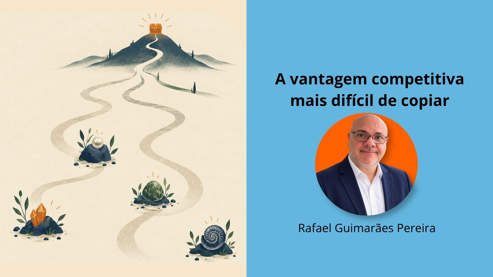

Redação: Rafael Guimarães Pereira | Revisão: Vânia Cristina Pereira Cabral
Tudo o que tem a ver comigo, com a minha singularidade, é somente meu. Sou uma combinação única de experiências, características, capacidades, limitações, valores e escolhas. Minha sócia, meus colaboradores, meus clientes também são únicos.
O problema começa quando não refletimos sobre quem somos. Por não saber quem somos, podemos acabar imitando os outros, especialmente quando percebemos que determinada pessoa ou empresa está tendo sucesso. Mas o que é, afinal, sucesso? A grama do vizinho parece sempre mais verde, não é mesmo?
Com as empresas acontece a mesma coisa. Olhamos para um negócio que está crescendo, para um modelo que aparentemente funciona, e pensamos: quero chegar naquele lugar também. Só que, nessa tentativa, pessoas e empresas podem se perder, porque cada indivíduo e cada organização é aquilo que é: singular. E, vamos falar a verdade, ninguém quer saber de cópia.
Essa corrida atrás do sucesso alheio pode estar relacionada à insegurança, que, por sua vez, tem relação com assumir a própria identidade, tanto como pessoa física quanto como pessoa jurídica. Quando não assumimos quem somos, deixamos de prestar assistência a nós mesmos e às outras pessoas, porque não reconhecemos aquilo que temos de melhorar e, principalmente, aquilo que temos de melhor para oferecer.
Por isso, penso que, em vez de fazer uma caça ao tesouro externo, competindo com outras empresas pelo mesmo espaço, a jornada pode ser uma busca pelo tesouro interno: aquilo que cada indivíduo tem de melhor. É a partir dessa descoberta que podemos construir a base da nossa organização, que, por consequência, será singular, com soluções únicas e impactantes para a sociedade, porque emanam genuinamente das pessoas, de quem elas são de verdade.
Nesse movimento, saímos de um paradigma de escassez, no qual todos disputam o mesmo tesouro e alguns têm mais sucesso do que outros, para um paradigma de abundância, no qual cada um está em sua própria jornada singular, oferecendo soluções importantes para seus clientes.
Talvez a vantagem competitiva mais difícil de copiar não esteja no produto, na tecnologia, no preço ou no modelo de negócio. Pode estar justamente naquilo que não conseguimos copiar: a singularidade de quem constrói a empresa. E você, já considerou que pode estar copiando o modelo de sucesso de outras pessoas ou empresas? Avalia periodicamente a assunção da sua própria singularidade?
#Empreendedorismo #Singularidade #VantagemCompetitiva #Nordosudo